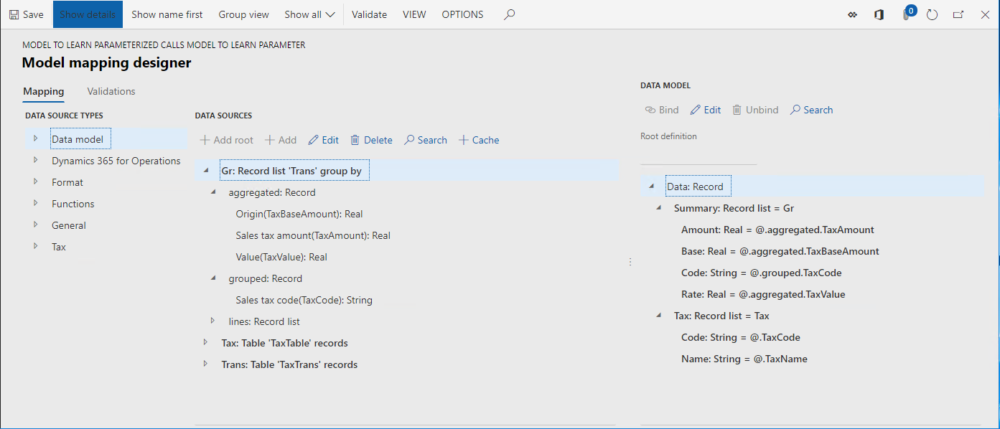
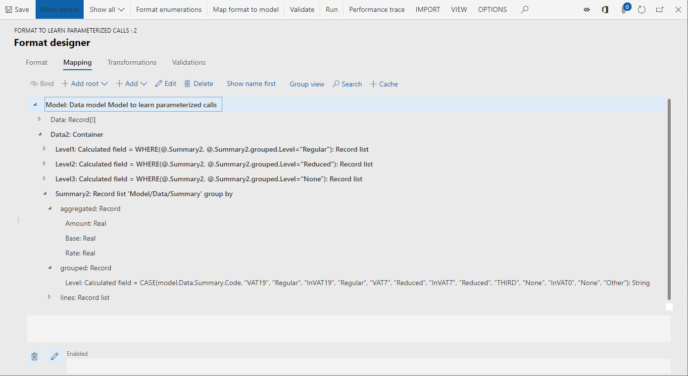
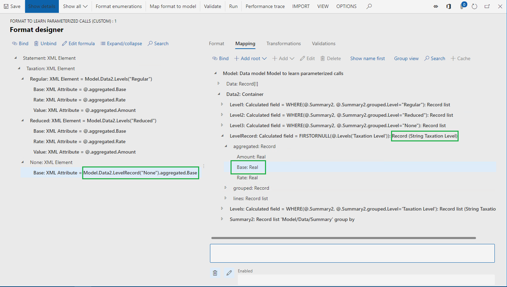

Unterstützen parametrisierter Aufrufe von ER-Datenquellen des Typs „Berechnetes Feld“
[!include[banner](../includes/banner.md)]In diesem Thema wird erläutert, wie Sie eine Datenquelle für die elektronische Berichterstellung (Electronic Reporting, ER) mithilfe des Typs Berechnetes Feld entwerfen können. Diese Datenquelle enthält ggf. einen ER-Ausdruck, der bei Ausführung durch die Werte der Parameterargumente gesteuert werden kann, die in einer Bindung konfiguriert sind, die diese Datenquelle aufruft. Wenn Sie parametrisierte Aufrufe einer solchen Datenquelle konfigurieren, können Sie eine einzelne Datenquelle in vielen Bindungen wiederverwenden, wodurch die Gesamtanzahl der Datenquellen verringert wird, die in ER-Modellzuordnungen oder in ER-Formaten konfiguriert werden müssen. Außerdem wird die konfigurierte ER-Komponente vereinfacht, wodurch sich die Instandhaltungskosten sowie die Kosten für die Verwendung durch andere Verbraucher verringern.
Voraussetzungen
Um die Beispiele in diesem Thema abzuschließen, müssen Sie den folgenden Zugriff haben:
Zugreifen auf eine dieser Rollen:
- Entwickler für elektronische Berichterstellung
- Funktionaler Berater für elektronische Berichterstellung
- Systemadministrator
Zugriff auf die Regulatory Configuration Services (RCS), die für denselben Mandanten wie Finance and Operations bereitgestellt wurden, für eine der folgenden Rollen:
- Entwickler für elektronische Berichterstellung
- Funktionaler Berater für elektronische Berichterstellung
- Systemadministrator
Sie müssen auch die folgenden Dateien herunterladen und lokal speichern.
| Inhalt | Dateiname |
|---|---|
| Beispiel-EB-Datenmodell-Konfiguration | Model to learn parameterized calls.version.1.xml |
| Beispiel-EB-Metadatenkonfiguration | Metadata to learn parameterized calls.version.1.xml |
| Beispiel-EB-Modellzuordnungskonfiguration | Mapping to learn parameterized calls.version.1.1.xml |
| Beispiel-EB-Formatkonfiguration | Format to learn parameterized calls.version.1.1.xml |
Anmelden bei Ihrer RCS-Instanz
In diesem Beispiel erstellen Sie eine Konfiguration für die Musterfirma Litware, Inc. Zunächst müssen Sie im RCS die Schritte in der Prozedur Konfigurationsanbieter anlegen durchführen und als aktiv markieren:
Wählen Sie im Standard-Dashboard Elektronische Berichterstellung aus.
Wählen Sie Berichterstellungskonfigurationen aus.
Importieren Sie die heruntergeladenen Konfigurationen in der folgenden Reihenfolge in RCS: Datenmodell, Metadaten, Modellzuordnung, Format. Führen Sie die folgenden Schritte für jede ER-Konfiguration aus:
- Wählen Sie Wechselkurs aus.
- Wählen Sie Aus XML-Datei laden aus.
- Wählen Sie Durchsuchen und dann die erforderliche EB-Konfiguration im XML-Format aus.
- Wählen Sie OK aus.
Überprüfen der bereitgestellten ER-Lösung
Überprüfen der Modellzuordnung
Erweitern Sie in der Konfigurationsstruktur den Inhalt des Elements Modell zum Ermitteln parametrisierter Aufrufe.
Wählen Sie Zuordnung zum Ermitteln parametrisierter Aufrufe aus.
Wählen Sie Designer aus.
Wählen Sie Designer aus.
Diese ER-Modellzuordnung ist für die folgenden Aktionen vorgesehen:
Holen Sie sich die Liste der Steuercodes (Steuern Datenquelle), die sich in der Tabelle Steuertabelle befinden.
Holen Sie sich die Liste der Steuertransaktionen (Trans Datenquelle), die sich in der Tabelle TaxTrans befinden:
Gruppieren Sie die Liste der abgerufenen Transaktionen (GR-Datenquelle) nach Steuercode.
Berechnen Sie für gruppierte Transaktionen nach aggregierten Werten pro Steuercode:
- Summe der Steuerbasiswerte
- Summe der Steuerwerte
- Mindestwert des angewendeten Steuersatzes
Die Modellzuordnung in dieser Konfiguration implementiert das Basisdatenmodell für alle EB-Formate, für die dieses Modell erstellt und in Finance and Operations ausgeführt werden. Demzufolge wird der Inhalt der Steuer- und GR-Datenquellen für ER-Formate wie abstrakte Datenquellen bereitgestellt.

Schließen Sie die Seite Modellzuordnungsdesigner.
Schließen Sie die Seite Modellzuordnung.
Überprüfen des Formats
Erweitern Sie in der Konfigurationsstruktur den Inhalt des Elements Modell zum Ermitteln parametrisierter Aufrufe.
Wählen Sie Format zum Ermitteln parametrisierter Anrufe aus.
Wählen Sie Designer aus. Dieses ER-Format ist für die folgenden Aktionen vorgesehen:
- Generieren Sie einen Steuerauszug im XML-Format.
- Stellen Sie die folgenden Besteuerungsstufen im Steuerauszug dar: „Regulär“, „Reduziert“ und „Keine“.
- Stellen Sie mehrere Details für jedes Besteuerungsniveau dar, die jeweils eine andere Anzahl von Details auf jeder Stufe aufweisen.
Wählen Sie Zuordnung aus.
Erweitern Sie die Elemente Modell, Daten, und Zusammenfassung.
Das berechnete Feld Model.Data.Summary.Level enthält den Ausdruck, der den Code des Besteuerungsniveaus (Regulär, Reduziert, Kein, oder Sonstige) als Textwert für jeden Steuercode zurückgibt, der zur Laufzeit aus der Datenquelle Model.Data.Summary abgerufen werden kann.

Erweitern Sie das Element Modell.Data2.
Erweitern Sie das Element Modell.Data2.Summary2.
Die Datenquelle Modell.Data2.Summary2 ist zum Gruppieren der Transaktionsdetails der Datenquelle Model.Data.Summary nach Besteuerungsniveau (die vom berechneten Feld Model.Data.Summary.Level zurückgegeben werden) und zum Berechnen der Aggregationen konfiguriert.

Überprüfen Sie die berechneten Felder Model.Data2.Level1, Model.Data2.Level2 und Model.Data2.Level3. Diese berechneten Felder werden verwendet, um die Datensatzliste Model.Data2.Summary2 zu filtern und nur Datensätze zurückzugeben, die ein bestimmtes Besteuerungsniveau darstellen.
Seite Format-Designer schließen.
Erstellen eines abgeleiteten Formats
Sie können das bereitgestellte Format verbessern, indem Sie ein berechnetes Feld hinzufügen, um das erforderliche Besteuerungsniveau zu filtern, anstatt die vorhandenen drei Felder zu verwenden: Modell.Data2.Level1, Modell.Data2.Level2 und Modell.Data2.Level3. Das erforderliche Besteuerungsniveau kann an dem Ort festgelegt werden, an dieses neue berechnete Feld aufgerufen wird.
- Erweitern Sie in der Konfigurationsstruktur den Inhalt des Elements Modell zum Ermitteln parametrisierter Aufrufe.
- Wählen Sie Format zum Ermitteln parametrisierter Anrufe aus.
- Wählen Sie Konfiguration erstellen.
- Wählen Sie Von Name ableiten: Formatieren zum Ermitteln parametrisierter Aufrufe, Microsoft aus.
- Geben Sie im Feld Name den Text Format zum Ermitteln parametrisierter Aufrufe (benutzerdefiniert) ein.
- Wählen Sie Konfiguration erstellen aus.
Konfigurieren eines parametrisierten berechneten Felds, das eine Liste der Datensätze zurückgibt
Hinzufügen eines neuen berechneten Felds
- Wählen Sie Designer aus.
- Wählen Sie Erweitern/Reduzieren aus, um alle Formatelemente zu erweitern.
- Wählen Sie Zuordnung aus.
- Erweitern Sie das Element Model.
- Wählen Sie das Element Modell.Data2 aus.
- Wählen Sie Hinzufügen aus.
- Wählen Sie das Feld Funktionen\Berechnet aus.
- Geben Sie im Feld Name Ebenen ein.
- Wählen Sie Formel bearbeiten aus.
Definieren eines Parameters für das Hinzufügen eines berechneten Felds
Wählen Sie Parameter aus.
Wählen Sie Neu aus.
Geben Sie im Feld Name Besteuerungsniveau ein.
Wählen Sie im Feld Typ Zeichenfolge aus.
Es können nur primitive Datentypen verwendet werden, um das Argument des Parametertyps anzugeben. Daher können die Typen Datensatzliste, Datensatz und Enumeration nicht für diesen Zweck verwendet werden.
Für ein einzelnes berechnetes Feld können maximal 8 Parameter angegeben werden.

Wählen Sie OK.
Durch das Hinzufügen dieses Parameters legen Sie die Bedingung fest, die vorliegen muss, um dieses berechnete Feld aufzurufen. Wenn Sie dieses berechnete Feld aufrufen, müssen Sie das Argument des Paramaters Besteuerungsniveau als Wert mit dem Format Zeichenfolge angeben.
Stellen Sie sicher, dass Sie Parameter nur für die berechneten Felder definieren, die sich in einem Container (Datensatzliste, Datensatz oder Container) befinden.
Der konfigurierte Parameter ist in der Liste der Datenquellen für dieses berechnete Feld verfügbar. Sie können dem konfigurierten Ausdruck den Parameter hinzuzufügen, indem Sie Datenquelle hinzufügen auswählen.

Definieren eines Ausdrucks für das Hinzufügen eines berechneten Felds
Geben Sie im Feld Formel Folgendes ein:
WHERE(@.Summary2, @.Summary2.grouped.Level =
Wählen Sie den Parameter Besteuerungsniveau in der Liste der Datenquellen aus.
Wählen Sie Datenquelle hinzufügen aus:
Stellen Sie den Ausdruck im Feld Formel folgendermaßen fertig:
WHERE(@.Summary2, @.Summary2.grouped.Level = 'Taxation Level')
Wählen Sie Speichern.

Schließen Sie die Seite Formeldesigner.
Abschließen des Hinzufügens eines neuen berechneten Felds
- Wählen Sie OK.
Für das konfigurierte, parametrisierte berechnete Feld Ebenen auf der Seite Formatdesigner ist ein Argument vom Typ Zeichenfolge erforderlich.

Verwenden Sie das berechnete Feld für konfigurierte verbindliche Formatelemente
Wählen Sie Model.Data2.Levels aus, um das konfigurierte berechnete Feld auszuwählen.
Wählen Sie das Formatelement Statement.Taxation.Regular aus.
Wählen Sie Bindung aus.
Wählen Sie Ja aus, um die Ersetzung der derzeit verwendeten Datenquelle Level1 durch die neue Datenquelle Ebenen in allen geschachtelten Formatelementen des ausgewählten Formatelements zu bestätigen.
Die angewendete Bindung wurde als Aufruf des parametrisierten berechneten Felds erstellt. Standardmäßig wird der Name des gebundenen Formatelements als Argument für das parametrisierte berechnete Feld unter den folgenden Bedingungen erstellt:
- Das berechnete Feld ist für die Verwendung eines einzelnen Parameters konfiguriert.
- Der Datentyp dieses Parameters ist als Zeichenfolge definiert.
Wenn der Name des gebundenen Formatelements leer ist, wird der Datenquellenname dieses Elements in der angewendeten Bindung verwendet.
Wählen Sie das Formatelement Statement.Taxation.Reduced aus.
Wählen Sie Bindung aus.
Wählen Sie Ja aus, um die Ersetzung der derzeit verwendeten Datenquelle Level2 durch die neue Datenquelle Ebenen in allen geschachtelten Formatelementen unter dem ausgewählten Formatelement zu bestätigen.
Wählen Sie das Formatelement Statement.Taxation.None aus.
Wählen Sie Bindung aus.
Wählen Sie Ja aus, um die Ersetzung der derzeit verwendeten Datenquelle Level3 durch die neue Datenquelle Ebenen in allen geschachtelten Formatelementen unter dem ausgewählten Formatelement zu bestätigen.
Wenn Sie das Argument des parametrisierten berechneten Felds für das XML-Element angeben, das das Besteuerungsniveau darstellt (z. B. Model.Data2.Levels("Reduced") als Textwert), müssen Sie diesen Schritt nicht für die geschachtelten XML-Attribute ausführen. Deren Bindungen übernehmen den Wert des auf der übergeordneten Ebene zugeordneten Arguments (Model.Data2.Levels.aggregated.Base, nicht Model.Data2.Levels("Reduced").aggregated.Base).
Wiederkehrende Aufrufe von parametrisierten berechneten Feldern werden nicht unterstützt.
Sie können Formel bearbeiten auswählen und das standardmäßig übernommene Argument des parametrisierten berechneten Felds in der ausgewählten Bindung ändern. Wenn dieses Argument nicht vorhanden ist, kann dies zu Fehlern während der Laufzeit kommen. Benutzer werden über solch eine Situation informiert, wenn das aktuelle Format überprüft wird.

Konfigurieren eines parametrisierten berechneten Felds für die Rückgabe eines Datensatzes
Wenn ein parametrisiertes berechnetes Feld einen Datensatz zurückgibt, müssen Sie die Bindung einzelner Felder dieses Datensatzes zu Formatelementen unterstützen. In solchen Fällen ist keine übergeordnete Bindung vorhanden, die den Wert eines Arguments zum Aufrufen eines parametrisierten berechneten Felds enthält. Dieser Wert muss in der Bindung des Felds einen einzelnen Datensatz definiert werden.
Hinzufügen eines neuen berechneten Felds
- Wählen Sie das Element Modell.Data2 aus.
- Wählen Sie Hinzufügen aus.
- Wählen Sie das Feld Funktionen\Berechnet aus.
- Geben Sie im Feld Name die Bezeichnung LevelRecord ein.
- Wählen Sie Formel bearbeiten aus.
Definieren eines Parameters für das Hinzufügen eines berechneten Felds
- Wählen Sie Parameter aus.
- Wählen Sie Neu aus.
- Geben Sie im Feld Name Besteuerungsniveau ein.
- Wählen Sie im Feld Typ Zeichenfolge aus.
- Wählen Sie OK.
Definieren eines Ausdrucks für das Hinzufügen eines berechneten Felds
Geben Sie im Feld Formel Folgendes ein:
FIRSTORNULL(@.Levels(
Wählen Sie den Parameter Taxation Level aus.
Wählen Sie Datenquelle hinzufügen aus:
Hängen Sie im Feld Formel 'Taxation Level')) an die Eingabe in Schritt 1 an, um den Ausdruck abzuschließen:
FIRSTORNULL(@.Levels('Taxation Level'))
Wählen Sie Speichern.
Schließen Sie die Seite Formeldesigner.
Abschließen des Hinzufügens eines neuen berechneten Felds
- Wählen Sie OK.
Verwenden des konfigurierten berechneten Felds zum Binden von Formatelementen
- Erweitern Sie Model.Data2.LevelRecord, um das konfigurierte berechnete Feld auszuwählen.
- Erweitern Sie den Container Model.Data2.LevelRecord.aggregated des konfigurierten berechneten Felds.
- Wählen Sie das Feld Model.Data2.LevelRecord.aggregated.Base aus.
- Wählen Sie das Formatelement Statement.Taxation.None aus.
- Wählen Sie Bindung aufheben aus.
- Wählen Sie das Formatelement Statement.Taxation.None.Base aus.
- Wählen Sie Bindung aus.
- Wählen Sie Formel bearbeiten aus.
- Ändern Sie den Ausdruck in Model.Data2.LevelRecord("None").aggregated.Base.

Entfernen von berechneten Feldern, die nicht verwendet werden
- Wählen Sie Model.Data2.Level1 aus.
- Wählen Sei Löschen.
- Wählen Sie Model.Data2.Level2 aus.
- Wählen Sei Löschen.
- Wählen Sie Model.Data2.Level3 aus.
- Wählen Sei Löschen.
- Wählen Sie Speichern.
Note
Sie haben dasselbe berechnete Feld Model.Data2.Levels mehrmals in Formatbindungen verwendet. Es ist viel einfacher, ein einzelnes berechnetes Feld zu verwenden und beizubehalten, anstatt diesen Schritt für mehrere ähnliche Felder auszuführen.
- Seite Format-Designer schließen.
Abschließen der angepassten Version eines abgeleiteten Formats
- Wählen Sie im Inforegister Versions Status ändern aus.
- Wählen Sie Abgeschlossen aus.
Exportieren der abgeschlossenen Version eines abgeleiteten Formats
- Wählen Sie in der Konfigurationsstruktur Format zum Ermitteln parametrisierter Aufrufe (benutzerdefiniert) aus.
- Wählen Sie im Inforegister Versionen die abgeschlossene Version 1.1.1 aus.
- Wählen Sie Wechselkurs aus.
- Wählen Sie Als XML-Datei exportieren aus.
- Speichern Sie die lokal heruntergeladene Konfiguration im XML-Format.
Testen von ER-Formaten
Sie können die anfänglichen und verbesserten ER-Formate ausführen, um sicherzustellen, dass parametrisierte berechnete Felder, die konfiguriert sind, ordnungsgemäß funktionieren.
ER Konfigurationen importieren
Sie können überprüfte Konfigurationen aus RCS importieren, indem Sie das ER-Repository des Typs RCS verwenden. Wenn Sie die Schritte im Thema Importieren von elektronischen Berichtskonfigurationen (ER-Konfigurationen) aus Regulatory Configuration Services (RCS) (This is an external link) bereits durchgeführt haben, verwenden Sie das konfigurierte ER-Repository, um die zuvor in diesem Thema beschriebenen Konfigurationen in Ihre Umgebung zu importieren. Andernfalls führen Sie die folgenden Schritte aus:
Wählen Sie das Unternehmen DEMF und im Standard-Dashboard die Option Elektronische Berichterstellung aus.
Wählen Sie Berichterstellungskonfigurationen aus.
Importieren Sie die Konfigurationen aus dem Microsoft Download Center in der folgenden Reihenfolge: Datenmodell, Modellzuordnung, Format. Führen Sie die folgenden Schritte für jede ER-Konfiguration aus:
- Wählen Sie Wechselkurs aus.
- Wählen Sie Aus XML-Datei laden aus.
- Wählen Sie Durchsuchen aus, um die erforderliche EB-Konfiguration im XML-Format auszuwählen.
- Wählen Sie OK.
Importieren Sie die aus RCS exportierte abgeschlossene Version 1.1.1 des Formats Format zum Ermitteln parametrisierter Aufrufe (benutzerdefiniert):
- Wählen Sie Wechselkurs aus.
- Wählen Sie Aus XML-Datei laden aus.
- Wählen Sie Durchsuchen aus, um die lokal gespeicherte Datei Format zum Ermitteln parametrisierter Anrufe (benutzerdefiniert) im XML-Format auszuwählen.
- Wählen Sie OK.
Ausführen von ER-Formaten
- Erweitern Sie in der Konfigurationsstruktur den Inhalt des Elements Modell zum Ermitteln parametrisierter Aufrufe.
- Wählen Sie Format zum Ermitteln parametrisierter Anrufe aus.
- Wählen Sie im oberen Menüband Ausführen aus.
- Speichern Sie das lokal generierte Ergebnis.
- Wählen Sie das Element Format zum Ermitteln parametrisierter Aufrufe (benutzerdefiniert) aus.
- Wählen Sie im oberen Menüband Ausführen aus.
- Speichern Sie das generierte Ergebnis lokal.
- Vergleichen Sie den Inhalt der generierten Ergebnisse.